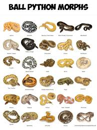

Here are many of the different types of Ball Pythons!

Ball pythons (BPs) make excellent pets for beginners due to their docile nature, relatively small size, and manageable care requirements.
These snakes typically live 30+ years in captivity with proper care, requiring a secure enclosure (20–40+ gallons), consistent 75–85°F temperatures,
50–60% humidity, and regular handling to keep them socialized.
Ball pythons are fascinating creatures that have a rich history in Eastern symbolism. In many cultures, pythons are revered for their ability to shed their skin and emerge renewed – a powerful metaphor for rebirth and transformation. In addition, these serpents have been associated with spiritual awakening, wisdom, and creativity.Ball Python Video